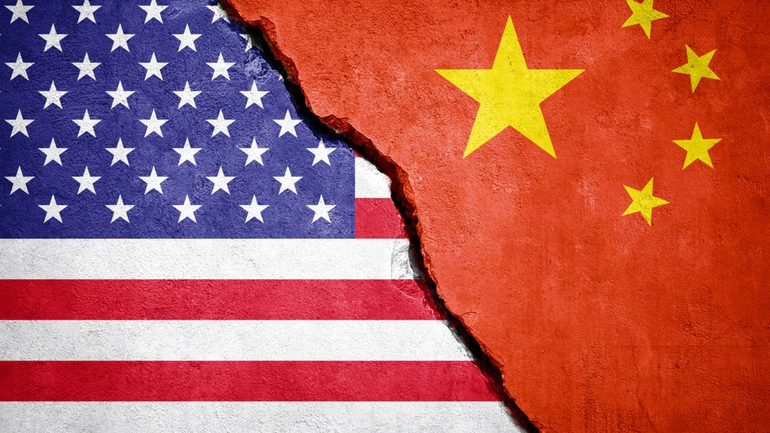

A Guerra Fria foi um período de conflitos e divisão de ideias
A Guerra Fria foi um período de intensa tensão entre Estados Unidos e União Soviética, de 1947 a 1991. Marcada pela disputa entre o capitalismo e o socialismo, envolveu conflitos indiretos, corridas armamentistas e momentos críticos.
